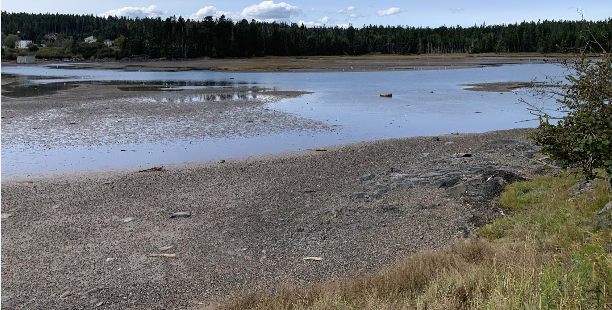

The project's main goal is to perform an in-depth assessment of SAR within the saltmarsh. The data collected will be compared to already existing historical data and used to predict possible future environmental changes and their effect on species distributions and guide the creation of effective conservation strategies. These findings would facilitate the protection of the shoreline and preserve existing marshes as they are vital to maintaining the health of these ecosystems. The project's primary goal is to enhance interest in marsh conservation and invasion dynamics, deepen understanding of coastal ecosystems, and encourage environmental stewardship for generations to come.

The saltmarsh, September 2024.
Every location on the Earth can be viewed as a combination of a geospatial area and the species that inhabit that area. Protecting both SAR and non-SAR is linked to protecting the associated environment used by these species. Protection comes in two flavors: active and passive. Passive protection occurs as a consequence of the legal system that has jurisdiction over a particular location. The legal system in effect on the day a particular action is taken governs whether or not the action is legal or illegal. For example, the Living Laboratory wishes to cut down all the trees on its peninsula at Deadman's Head. The existing laws governing this area require terrestrial buffers be maintained between water and land. So, this area cannot be harvested. What is left can be harvested for better or for worse. Active protection comes from citizens / groups whose beliefs are orientated to maintaining some ecological state for a location. With active protection, the fate of a location has a higher probability of being protected in its natural state as there are people actively engaged in activities to ensure this outcome. Beyond this, it takes a critical mass of individuals and money for environmental protection to occur. As the adage goes “freedom is not free” so equally it applies to “preserving nature is not free”. It takes a well-organized and well-funded effort to conduct modern conservation / protection / restoration. NGOs are non-profit organizations in Canada that are well positioned for active protection of locations and species.